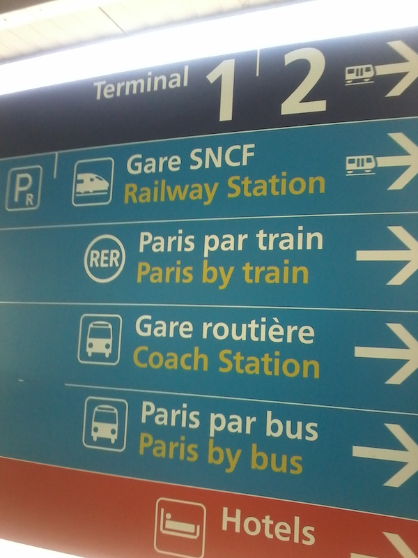
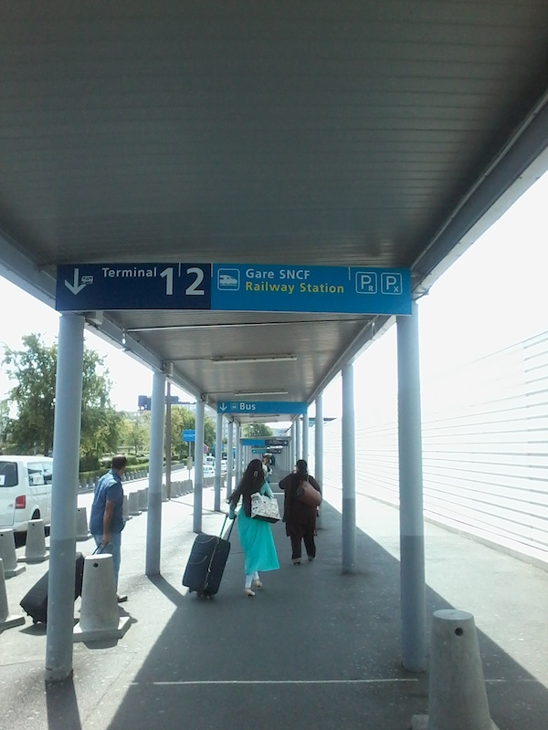

Multiple signs require stopping and reading, often in an idiom and sometimes even in an alphabet a newcomer does not master. The flow is interrupted, frustration ensues, both in those who stop, and in those around them who know their way and have to slow down. A covered passageway plainly says there is no other option, which is exactly what everybody should aim for. Affordances are powerful, and powerfully orchestrated by the linear sequence, and this in turns creates a stable crowd flow, which in itself is a powerful affordance.
Covered passages are mandatory outdoors to protect from adversarial weather, but why not implement them indoors to orient people around?
 CDG Airport. Aug 16th, 2018. Image credit: RC.